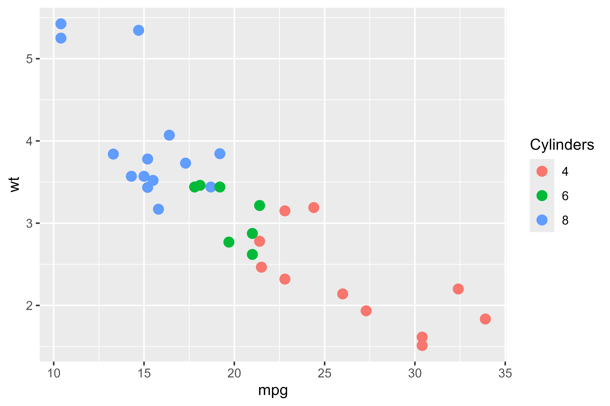
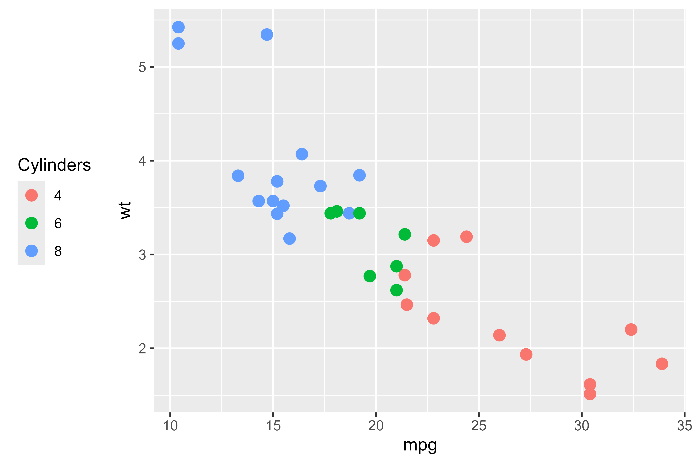
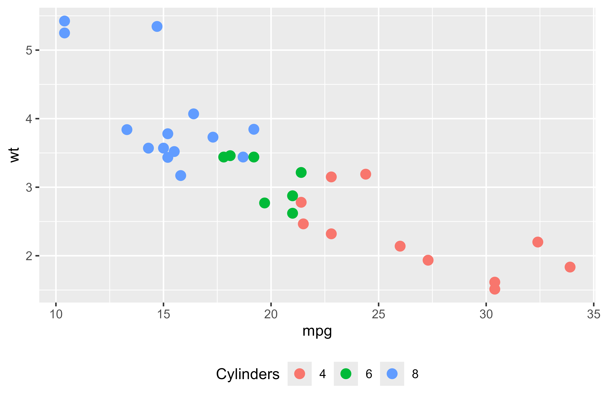
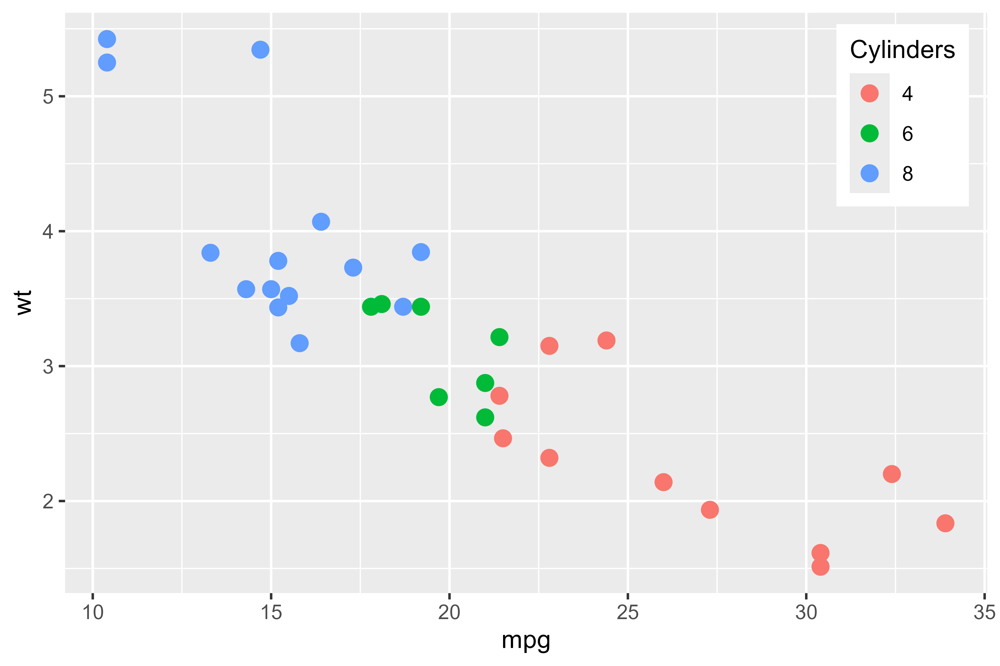
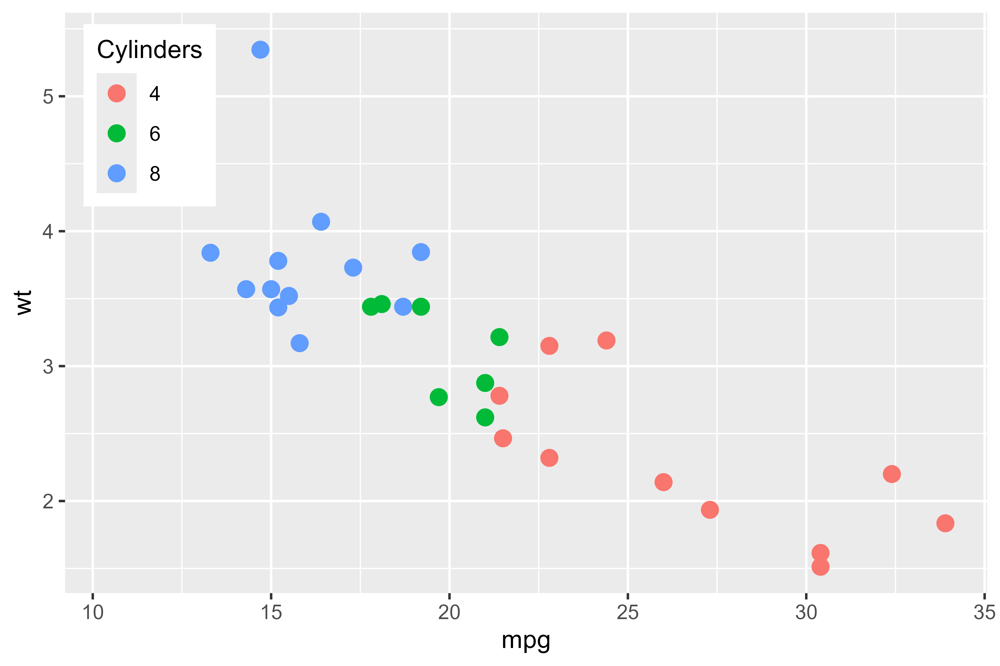
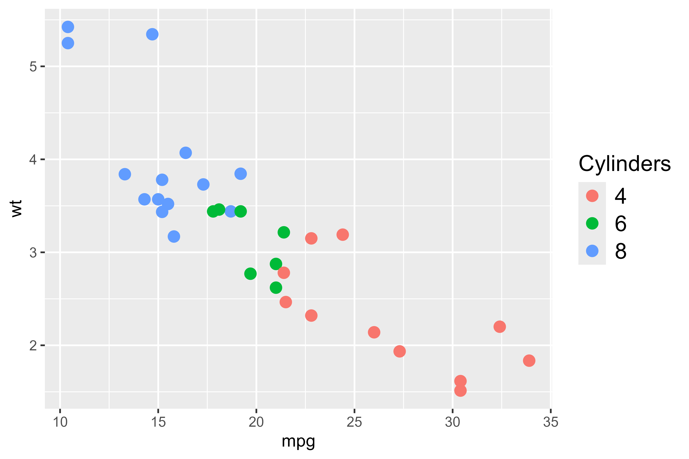
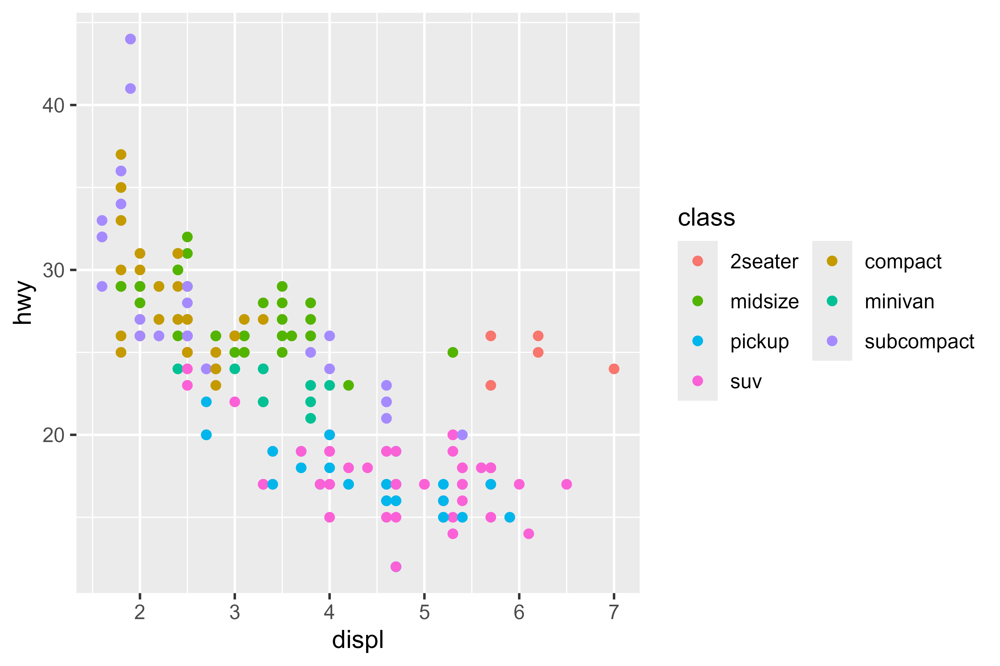
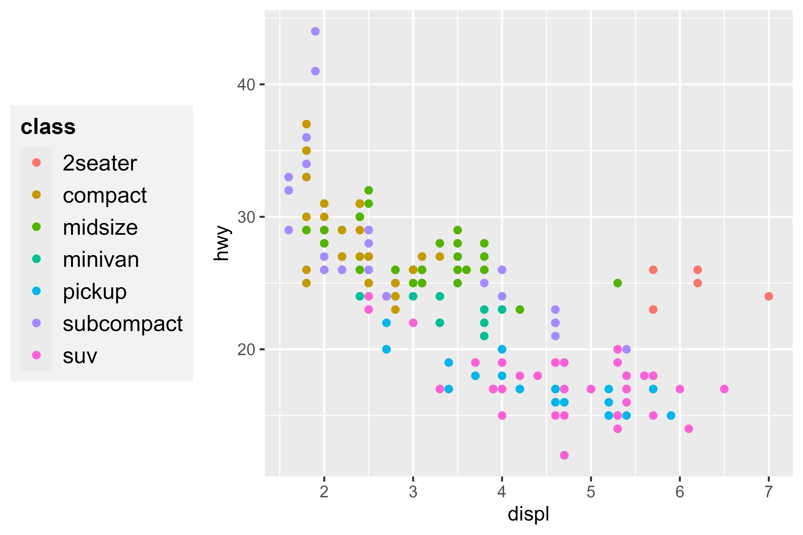
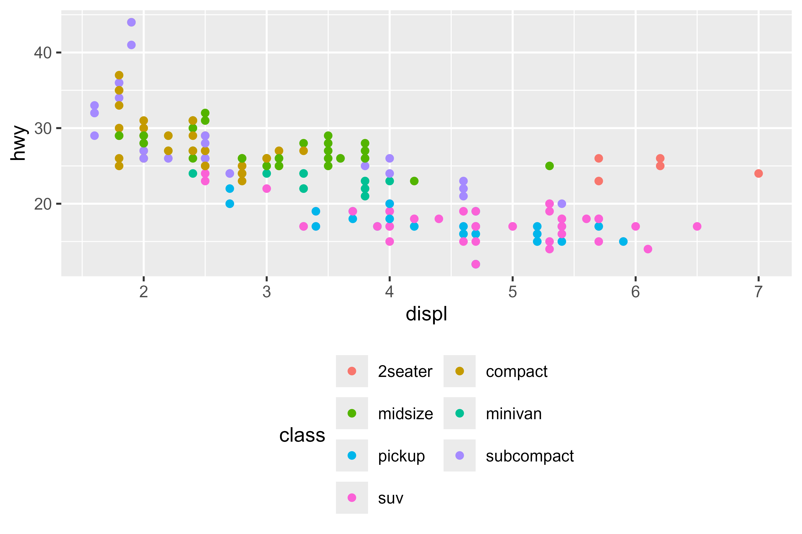

Getting Started with ggguides
Gilles Colling
2025-12-15
Source:vignettes/getting-started.Rmd
getting-started.RmdOverview
ggguides simplifies common legend operations in ggplot2. Instead of memorizing theme element names and their nested structure, you can use intuitive one-liner functions to position, style, and manage legends.
Key features:
- Position legends with
legend_left(),legend_right(),legend_top(),legend_bottom(),legend_inside() - Style legends with
legend_style()for fonts, backgrounds, and borders - Wrap legend entries with
legend_wrap()for multi-column layouts - Collect legends from patchwork compositions with
collect_legends()
Basic Usage
Let’s create a simple plot to demonstrate the legend helpers:
p <- ggplot(mtcars, aes(mpg, wt, color = factor(cyl))) +
geom_point(size = 3) +
labs(color = "Cylinders")
p
Moving the Legend
Position the legend on any side with a single function call:
p + legend_left()
p + legend_bottom()
Inside Positioning
Place the legend inside the plot area using coordinates or shortcuts:
p + legend_inside(position = "topright")
p + legend_inside(x = 0.02, y = 0.98, just = c("left", "top"))

Styling Legends
Use legend_style() to customize the legend
appearance:
p + legend_style(size = 14)
p + legend_style(
size = 12,
title_size = 14,
title_face = "bold",
background = "grey95",
background_color = "grey70"
)
Wrapping Legend Entries
For legends with many entries, use legend_wrap() to
create multi-column layouts:
ggplot(mpg, aes(displ, hwy, color = class)) +
geom_point() +
legend_wrap(ncol = 2)
Combining Functions
ggguides functions compose naturally with the +
operator:
ggplot(mpg, aes(displ, hwy, color = class)) +
geom_point() +
legend_left() +
legend_style(size = 12, title_face = "bold", background = "grey95")
ggplot(mpg, aes(displ, hwy, color = class)) +
geom_point() +
legend_wrap(ncol = 2) +
legend_bottom()
What’s Next
- See the Legend Positioning article for detailed position control
- See the Styling & Customization article for advanced styling options
- See the Patchwork Integration article for multi-panel workflows